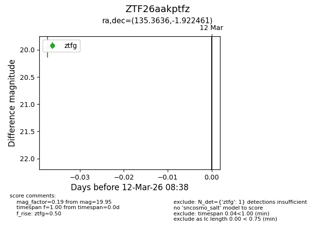
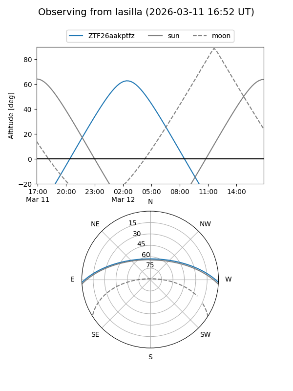
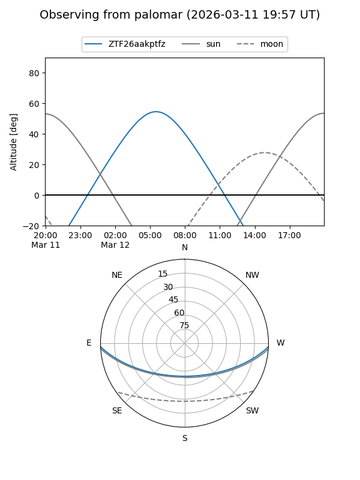
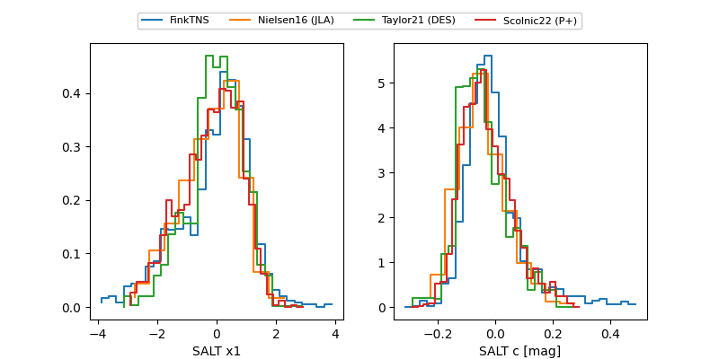

ZTF26aakptfz
Target ZTF26aakptfz at 2026-03-12 08:40
Aliases and brokers:
FINK: link
Lasair: link
ALeRCE: link
alt names
ZTF26aakptfz (ztf,fink_ztf)
Coordinates:
equatorial (ra, dec) = 135.3636,-1.92246
equatorial (HMS+DMS) = 09:01:27.25,-01:55:20.86
galactic (l, b) = (230.9859,+27.56002)
Flags:
Photometry:
last ztfg=19.95
1 ztfg detections
Lightcurve

Visibility


Additional plots
